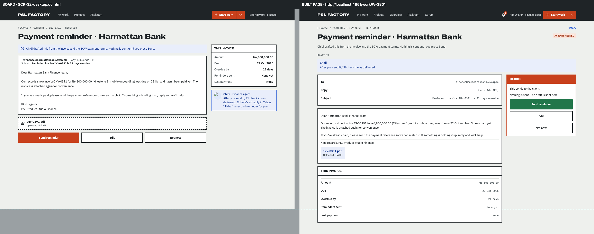
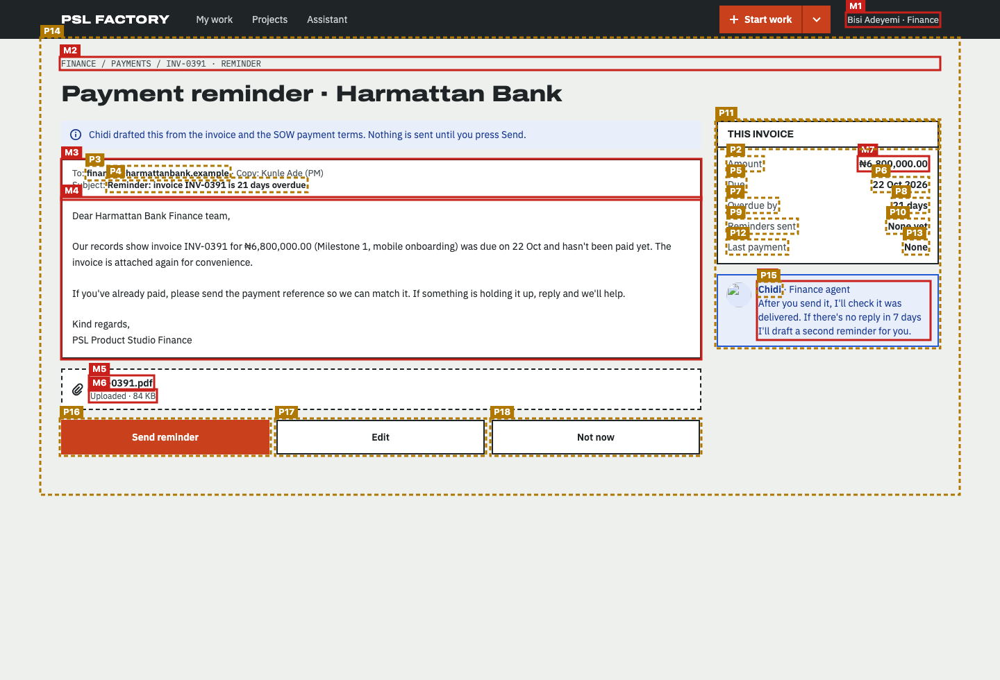
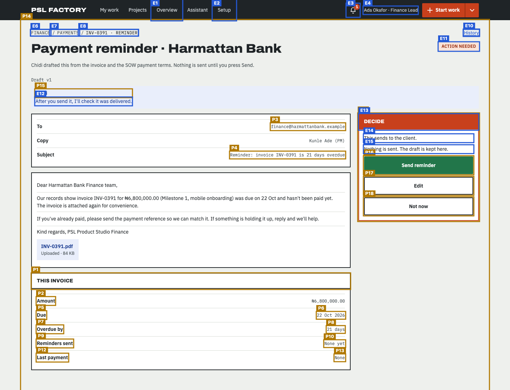
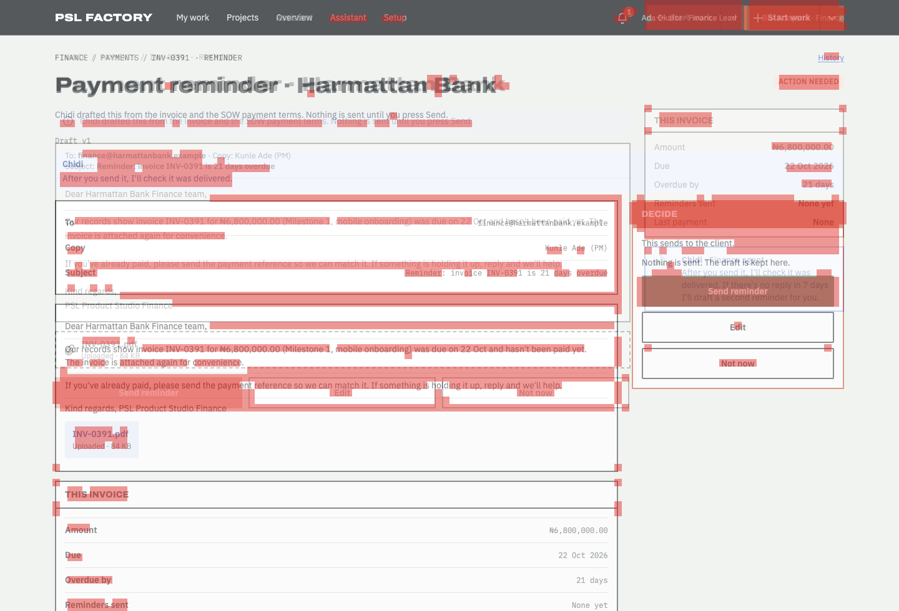

Does the built page follow the design?
Board SCR-32-desktop.dc.html compared with http://localhost:4951/work/W-3801 at 1440px wide · 2026-11-18T08:50:50.547Z
- Every board item is on the page or approved as an exception (100%).
- Visual match 76.9 is below 90.
- 18 item(s) are in a different place; review them (not part of the pass rule unless --strict-position).
27 of 35 things drawn on the board were found on the page: headings, buttons, links, search and filter controls, table columns, labels and the repeated rows (counted once, not per row).
How closely the shapes line up: blocks, bars, tables and text areas, compared in 12px squares over the top 980px. Different words in the same place still count as a match, so sample data does not lower the score.
Missing from the built page 8
Drawn on the board but not found on the page. Each one must be built, or approved as an exception.
| # | What | Text on the board | Where on the board | Exception |
|---|---|---|---|---|
| M1 | Text | Bisi Adeyemi · Finance | right, 20px down | approved Conflicts 14: the signed-in name is the mock's Finance persona (Ada Okafor · Finance Lead), drawn by the shell; the board's sample name is not built. · builder proposal, pending design engineer |
| M2 | Text | FINANCE / PAYMENTS / INV-0391 · REMINDER | middle, 84px down | approved Conflicts 14: the crumbs come from workspace.context.crumbs and the work-item frame draws them as a list (FINANCE, PAYMENTS, INV-0391 · REMINDER), each item matched by words but not as one string. · builder proposal, pending design engineer |
| M3 | Text | To: finance@harmattanbank.example · Copy: Kunle Ade (PM) Subject: Reminder: invoice INV-0391 is 21 days overdue | middle, 231px down | approved Conflicts 14: the shared line workspace draws an untitled facts section as label/value rows (To, Copy, Subject) with the same values; the frame is F-17's and is not changed here. · builder proposal, pending design engineer |
| M4 | Text | Dear Harmattan Bank Finance team, Our records show invoice INV-0391 for ₦6,800,000.00 (Milestone 1, mobile onboarding) was due on 22 Oct and hasn't been paid yet. The invoice is attached again for con | middle, 286px down | approved Conflicts 14: the shared workspace text section draws the four message paragraphs as rows, word for word; the board draws one block. · builder proposal, pending design engineer |
| M5 | Text | INV-0391.pdf | left, 543px down | approved Conflicts 8: drawn from the attachment proposal under the message (bold name, then "Uploaded · 84 KB"), inside the workspace row the tool reads as a data pattern. · builder proposal, pending design engineer |
| M6 | Text | Uploaded · 84 KB | left, 563px down | approved Conflicts 8: drawn under the file name from size_bytes (formatSize), inside the workspace row the tool reads as a data pattern. · builder proposal, pending design engineer |
| M7 | Text | ₦6,800,000.00 | right, 227px down | approved Conflicts 16: the This invoice Amount is on the page as sent (₦6,800,000.00) in the frame's facts list; the tool pairs it with the message's figure. · builder proposal, pending design engineer |
| M8 | Text | Chidi · Finance agent After you send it, I'll check it was delivered. If there's no reply in 7 days I'll draft a second reminder for you. | right, 407px down | approved Conflicts 6: no second-reminder interval is configured, so the "7 days" sentence is not shown; the frame's agent note carries the returned line "After you send it, I'll check it was delivered." at the top of the workspace. · builder proposal, pending design engineer |
In a different place 18
Found on both, but in a different order, side of the page, or area (for example inside the table frame instead of above it).
| # | What | How it moved |
|---|---|---|
| P1 | Text THIS INVOICE |
|
| P2 | Text Amount |
|
| P3 | Text finance@harmattanbank.example |
|
| P4 | Text Reminder: invoice INV-0391 is 21 days overdue |
|
| P5 | Text Due |
|
| P6 | Text 22 Oct 2026 |
|
| P7 | Text Overdue by |
|
| P8 | Text 21 days |
|
| P9 | Text Reminders sent |
|
| P10 | Text None yet |
|
| P11 | Side panel |
|
| P12 | Text Last payment |
|
| P13 | Text None |
|
| P14 | Main area |
|
| P15 | Text Chidi |
|
| P16 | Link Send reminder |
|
| P17 | Link Edit |
|
| P18 | Link Not now |
|
Looks different 19
Found on both, but styled differently: table rows and cells, fonts, colours, underlines, outlines, corners. Not part of the score; check each one against the board.
| What | Difference |
|---|---|
| Link "Start work" |
|
| Link "More ways to start" |
|
| Heading "Payment reminder · Harmattan Bank" |
|
| Text "Chidi drafted this from the invoice and the SOW payment terms. Nothing is sent until you press Send." |
|
| Text "finance@harmattanbank.example" |
|
| Text "Reminder: invoice INV-0391 is 21 days overdue" |
|
| Link "Send reminder" |
|
| Link "Edit" |
|
| Link "Not now" |
|
| Text "THIS INVOICE" |
|
| Text "Amount" |
|
| Text "Due" |
|
| Text "22 Oct 2026" |
|
| Text "Overdue by" |
|
| Text "21 days" |
|
| Text "Reminders sent" |
|
| Text "None yet" |
|
| Text "Last payment" |
|
| Text "None" |
|
On the page but not on the board 15
Built but not drawn. Some are expected (data, status lines); the rest need the design engineer to approve or remove them.
| # | What | Text on the page | Where on the page |
|---|---|---|---|
| E1 | Link | Overview | left, 0px down |
| E2 | Link | Setup | middle, 0px down |
| E3 | Button | Alerts, 1 unread | right, 11px down |
| E4 | Text | Ada Okafor · Finance Lead | right, 19px down |
| E5 | Navigation area | Where this sits | left, 85px down |
| E6 | Text | FINANCE | left, 85px down |
| E7 | Text | PAYMENTS | left, 85px down |
| E8 | Text | INV-0391 · REMINDER | left, 85px down |
| E9 | Navigation area | Work item | right, 85px down |
| E10 | Link | History | right, 84px down |
| E11 | Text | ACTION NEEDED | right, 120px down |
| E12 | Text | After you send it, I'll check it was delivered. | left, 276px down |
| E13 | Heading | DECIDE | right, 323px down |
| E14 | Text | This sends to the client. | right, 380px down |
| E15 | Text | Nothing is sent. The draft is kept here. | right, 411px down |
Pictures
The red dashed line on the side-by-side marks how far down the visual score looks. On the marked board, red boxes are missing items (M). On the marked page, amber boxes moved (P) and blue boxes are extra (E). In the difference picture both screens are laid over each other and red squares are where the shapes do not line up.






Notes about this run
- Images: /_blob/ images are served from /Users/Hunchoo/psl-factory-worktrees/f-41/design/mascots/canvas-assets.json (19 mapped).
- Images: 1 /_blob/ image(s) could not be shown because they are not in the assets map: /_blob/4ac9ee52f6c83d9cdc4f91e694a3a025. They render as broken images and lower the visual score.
Found on both (27)
| Navigation area | Main | |
| Text | PSL FACTORY | |
| Link | My work | |
| Link | Projects | |
| Link | Assistant | |
| Link | Start work | |
| Link | More ways to start | |
| Main area | ||
| Heading | Payment reminder · Harmattan Bank | |
| Text | Chidi drafted this from the invoice and the SOW payment terms. Nothing is sent until you press Send. | |
| Text | finance@harmattanbank.example | |
| Text | Reminder: invoice INV-0391 is 21 days overdue | |
| Link | Send reminder | |
| Link | Edit | |
| Link | Not now | |
| Side panel | page: Review and decide | |
| Text | THIS INVOICE | |
| Text | Amount | |
| Text | Due | |
| Text | 22 Oct 2026 | |
| Text | Overdue by | |
| Text | 21 days | |
| Text | Reminders sent | |
| Text | None yet | |
| Text | Last payment | |
| Text | None | |
| Text | Chidi |
How the scores are worked out
Element coverage. The board is drawn locally from its own template and sample data. From the drawn board the check lists everything a person sees or uses: page areas (navigation, main, search), headings, links, buttons, form fields with their labels, table column headers, filter, search and pagination controls and fixed labels. Rows drawn from sample data count once, as a pattern ("table rows with these columns"). Each item is looked for on the page by its kind and its words (ignoring capitals, curly quotes and small wording differences, at least 80% similar). Coverage is found ÷ drawn. Order is compared in reading order (top to bottom, left to right); an item is "moved" when it breaks the order, sits on the other side of the page, or sits inside a different area.
Visual match. Both full-page screenshots are compared in 12px squares after a light blur, over the board's height (980px; the page is 1102px). Only squares with something in them count. A square matches when its colours line up, or when both have text or lines there. Score = matching ÷ counted squares (5115 of 6651). Over every square including empty background it would be 84.4.
Technical details
Board file: /Users/Hunchoo/psl-factory-worktrees/f-41/design/canvas/finance/project/SCR-32-desktop.dc.html
Viewport: 1440×980
Report data: report.json
Exceptions file: /Users/Hunchoo/psl-factory/delivery/features/F-41/fidelity-exceptions.json